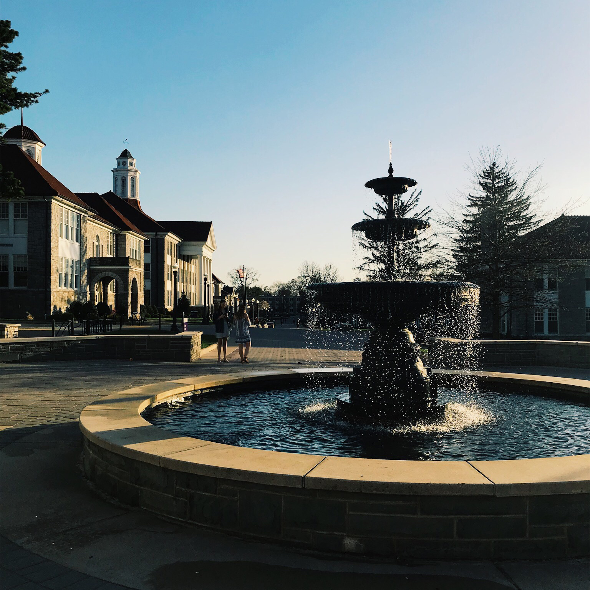
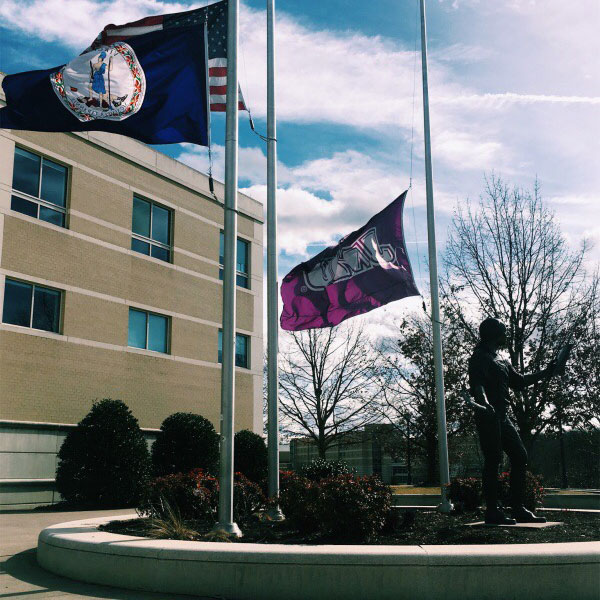
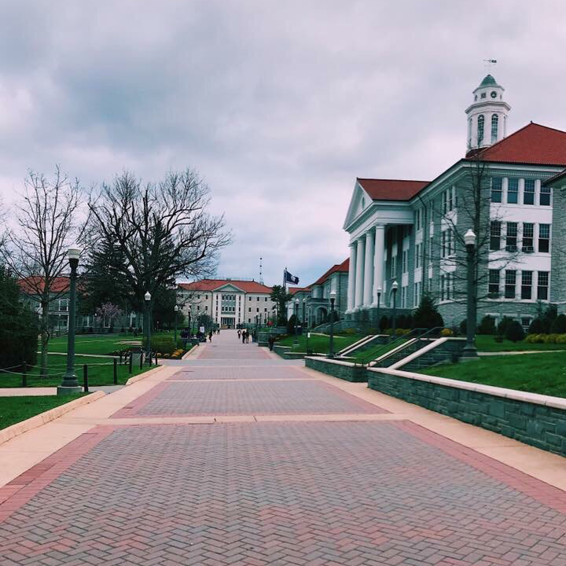
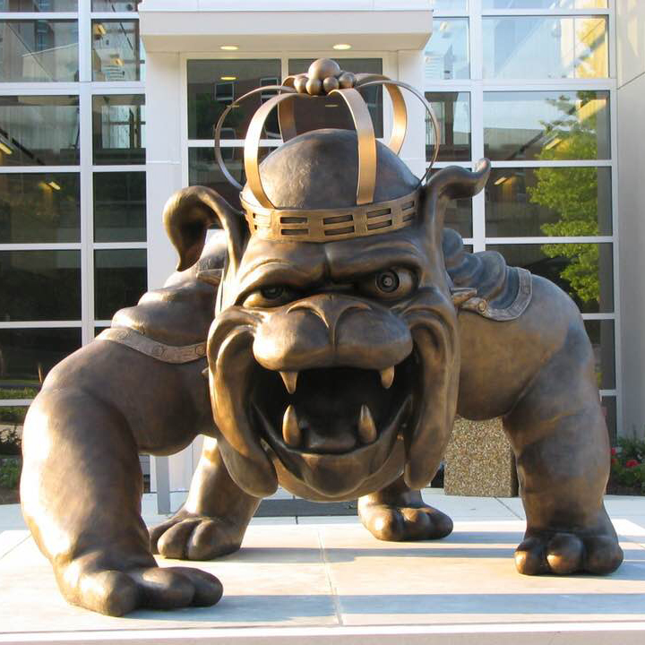

Photo Gallery - James Madison University

This is the fountain that sits outside of Carrier Library. When the weather is warmer, organizations usually gather around here to spread awareness of things.

This image shows the flag poles and the statue on east campus outside of the ISAT building.

This is Newman lake located behind the lakeview residence halls also referred to as "Greek Row".
This is the new Dining hall that was completed in 2018. It is called Dhall and was under construction for 3 years.

This is the quad located on main campus in the bluestone area where most students have classes.

The Duke Dog is the mascot for the school and the statue is a great photo op for students and visitors. Located right outside the stadium to strengthen the school spirit and pride.
x